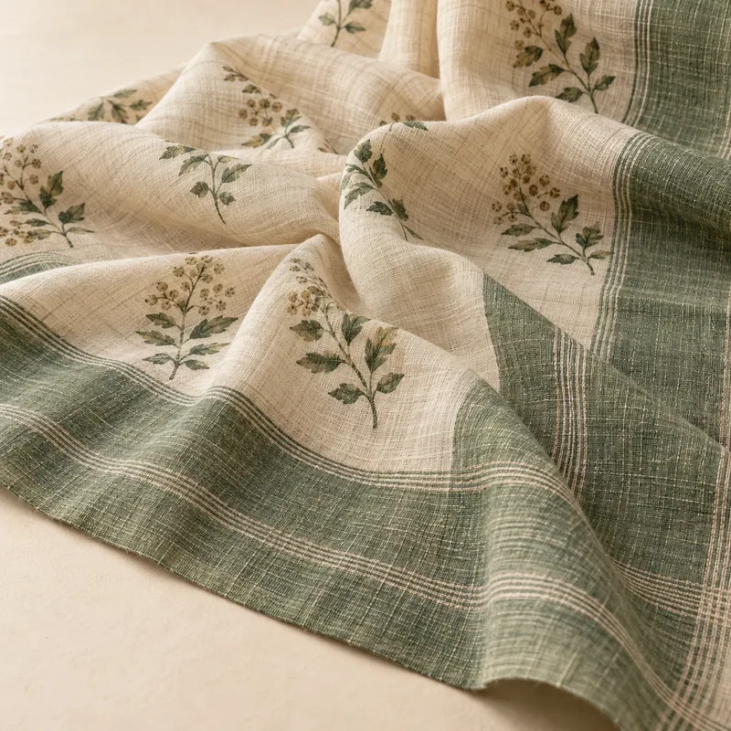
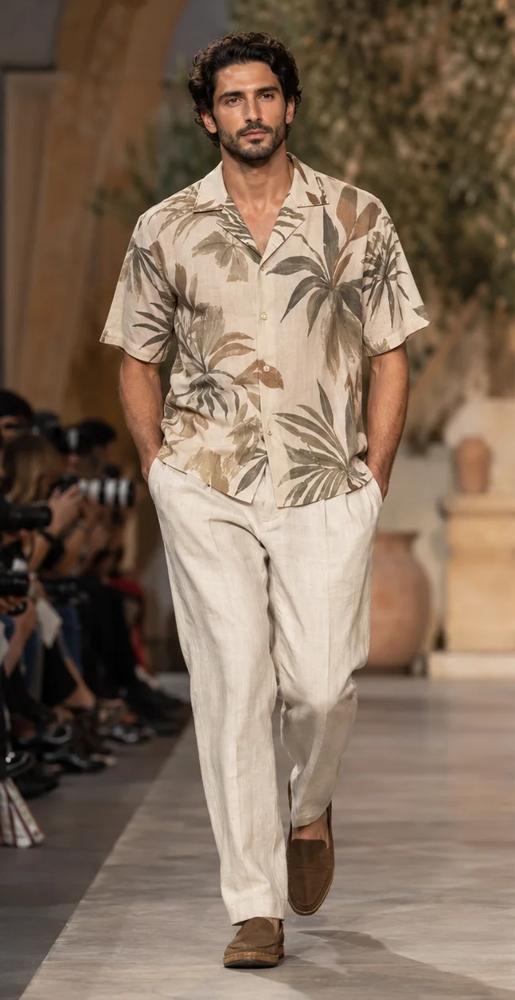

Lagos Fashion Week 2026 "CRAFTED": a guide to selling into West Africa
Lagos Fashion Week opens 28 October under the theme CRAFTED. What it means for SS27, Detty December demand, adire and aso oke, and West African range plans.

Lagos Fashion Week opens on Wednesday 28 October 2026 and runs to Sunday 1 November. Marie Claire Nigeria reports that this year's theme is "CRAFTED: Heritage. Innovation. Circular Futures.", focused on the skill, material knowledge and processes behind African fashion today, and on linking ancestral techniques with contemporary design and circularity. For brands, buyers and manufacturers outside Nigeria, it is a timely moment to look at West Africa as a market, and at what its runway is saying about SS27.
The week at a glance
The organiser is Style House Files, a creative business development agency. Marie Claire Nigeria lists a welcome party on 28 October, three days of runway shows (29–31 October) at the LagosFW Tents at the Federal Palace Hotel on Victoria Island, and offsite shows and special presentations on 1 November. Heineken is title sponsor, with NIVEA, Africa Finance Corporation and Lush Hair as supporters.
The Rio Times notes that the week was founded in 2011, that the 2025 edition marked its 15th year, and that the organiser lists it as a 2025 Earthshot Prize winner in the "Build a Waste-Free World" category. Two programmes matter for the trade: Green Access, which supports young labels working with recycled or responsibly sourced materials, and the Fashion Business Series, talks on how African brands can sell abroad and build lasting companies.
The CRAFTED theme was set earlier in the year. In April 2026, Style House Files ran Woven Threads VII in Lagos, its platform for circular and responsible production in Africa's apparel and textile supply chains, framing craft as a working system rather than only heritage: material innovation, community-based making and reuse.

Why West Africa matters to the calendar
Nigeria and West Africa are hot and humid all year, with a rainy season from about April to October, so the region does not follow the northern AW and SS split. Forecut's Africa data shows the key moments are Detty December, weddings and Eid, with a taste for statement occasion wear, bold print and colour, sharp tailoring and aso-ebi group dressing, where guests at a wedding or celebration wear coordinated fabric.
Detty December is now measurable. Nairametrics, reporting on MO Africa Co.'s "Economics of Euphoria" study, puts consumer spending in Lagos across the 55-day festive window (mid-November 2025 to 10 January 2026) at about N396.5 billion, with 3.6 million participants, more than 70% of them Gen Z or Millennial. Diaspora visitors contributed 55% of spending, and the US overtook the UK as the largest source of international arrivals, at 27%. Fashion was not counted separately, but a young crowd of parties, concerts and weddings is a strong signal for occasion and going-out wear.
Craft cloth is everyday wear
Heritage textiles are not only for ceremonies. BusinessDay reported that young professionals in Victoria Island and Lekki wear adire (Yoruba indigo resist-dyed cloth) and aso oke (strip-woven cloth) to work: adire blazers, blouses, midi skirts and men's shirts; aso oke ties worn with white shirts; and lighter, breathable aso oke two-piece sets and shift dresses. For brands outside the region this is the key point: the market rewards contemporary cuts in recognisable local cloth, and lighter weaves that work in heat.
SS27 details that suit West African shoppers
Many SS27 details Forecut tracks fit this market with little adaptation:
- Photographic and art prints and printed resort shirts (both rising in SS27): a natural home for bold print and colour, and for diaspora holiday wardrobes.
- Bubble-hem dresses and puff-shoulder minis (rising), with peplum blouses and cinched peplum jackets (emerging): volume and a defined waist, which South African Fashion Week also pushed in its SS26 shows.
- Gilded embroidered shirting and embroidered denim (rising), with bead-droplet embroidered dresses (emerging): handwork for party and wedding-guest looks.
- Linen and seersucker shirts, grandad collar linen shirts and crochet tops and cardigans (rising): hot-climate fabrics and visible making.
- Woven leather mules and fisherman sandals (rising): craft footwear that works with occasion and daywear.

What to do this season
- Plan West African and diaspora drops to land from mid-November, ahead of the festive window, not on the northern SS27 date in February.
- Offer aso-ebi-friendly options: one silhouette cut in several colourways, or sold as fabric plus pattern, so groups can coordinate.
- Treat heritage cloth as a fabric choice, not a costume: tailored blazers, shirts and co-ords in adire, aso oke or locally inspired resist prints. Work with makers and credit them; never copy a named designer's print.
- Keep weights light and breathable for heat and humidity; save heavier fabrics for air-conditioned evening venues.
- Tell the material story. With CRAFTED, Green Access and Woven Threads all pointing at circular and responsible production, be ready to explain dyes, fibres and who made the piece.